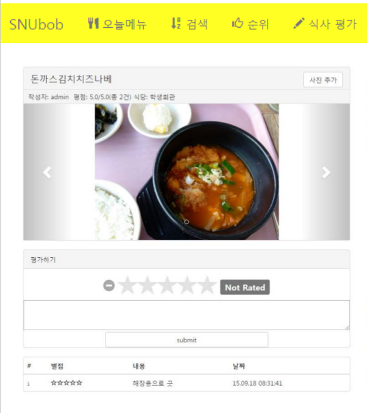

3. Codit

cafeteria menu info at SNU
서울대학교 구내식당 메뉴 조회, 평가서비스

1. 메뉴 조회
오늘의 학교 식당메뉴는?
2. 메뉴 평가
오늘 식사는 어땠나요? 별점, 사진, 한줄평을 남길 수 있습니다.
3. 메뉴 검색
제육볶음은 어느 식당이 가장 맛있을까? 메뉴 이름으로 검색하면 다른 학생들이 남긴 평가, 사진, 평점을 볼 수 있다.
4. 인기 메뉴
학생들이 뽑은 가장 맛있는 메뉴 TOP10. 평균 별점이 가장 높은 순서대로.